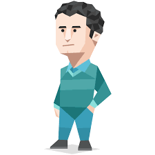
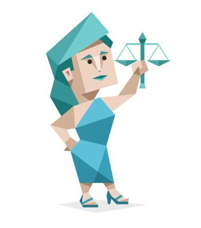
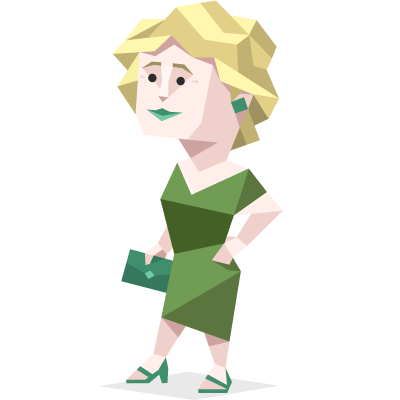
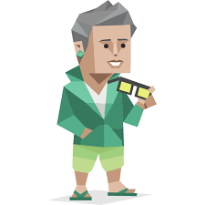

The Churner Customers Data have been clustered properly as shown below.
{{ churnerTable|safe }}
It will be updated to the visualization dashboard accordingly.
{% endif %}
{% if churnerTable %}
{% endif %}
Churner Segment Names
Characteristics
Suggested Marketing Startegy
The Economical Explorer
Moderate CLTV Cluster
They are likely to seek cost-effective telco subscriptions.
Their low monthly spending suggests their mindful trait in spending.
Their average tenure suggests that they are still exploring different telco subscriptions.
Highlights the need to promote more cost-effective telco service packages and exploration of new subscription deals.
Promotional Marketing
offers affordable plans with promotional discounts for those who subscribe within that period of time.
emphasize on competitive pricing between different telco subscriptions and the current one.
Freebie Marketing
offers them free trials on new telco services packages to encourage them to explore with confidence.
include free gifts to them when they sign up for a subscription plan.
The Loyal High-Value Enthusiasts
Significantly high CLTV Cluster which can contribute to the company's revenue.
They are willing to and enthusiastic about premium telco services.
Despite having high tenure months with the telco service, they still churn due to several reasons.
A significant cluster that requires more attention to keep them from churning.
They seek and appreciate exclusive benefits and premium experience from the company.
Highlights the need to reward their continued loyalty.
Loyalty Enhancement
provide exclusive benefits and top-tier telco deals to enhance their overall experience.
offer loyalty programs, VIP access and early access to new telco features so that they continue to stay loyal and not churn.
Community Marketing
organize engagements to seek feedback on improving the services and show appreciation to them if they continue to stay loyal.
The Short-Lived Moderate Spenders

Lowest CLTV Cluster
They may have joined with high expectations but found no long-term value with the telco service.
They might be potential high-valued customers if they stayed loyal due to their high monthly spending.
Highlights the need to educate them on the benefits they may have overlooked during their short tenure.
Educational Marketing
provide tutorial contents to educate customers on how to maximize their usage and introduce them to more hidden benefits.
highlight long-term benefits and offer incentives to extend their subscription such as loyalty discounts.
Community Marketing
engaging long-term customers into the community to share their stories and testimonials with the telco services.
organize engagement events to promote loyalty activities and rewards collections.
{% if nonChurnerTable %}
The Non-Churner Customers Data have been clustered properly as shown below.
{{ nonChurnerTable|safe }}
It will be updated to the visualization dashboard accordingly.
{% endif %}
{% if nonChurnerTable %}
{% endif %}
Non-Churners Segment Names
Characteristics
Suggested Marketing Startegy
The Budget Conscious
Lowest CLTV Cluster
They are price-sensitive and prioritize cost-saving over long-term loyalty.
They have a high likelihood of churning if they find better telco service deals elsewhere.
Highlights the need to promote affordability and long-term benefits.
Promotional Marketing
offer budget-friendly telco services plans such as discounted telco bundles.
introduce flexible payment options for the telco subscription.
Community Marketing
launch referral programs to provide additional discounts on each successful referral.
engage high-valued customers as testimonials to showcase their loyalty benefits.
The Moderate Users

Moderate CLTV Cluster
Moderate monthly spending and medium tenure.
They have a balanced approach in utilizing their subscription package by not being excessively high spenders.
Highlights the need to educate them on the benefits they may have overlooked during their short tenure.
Upselling Marketing
encourage them to experience better telco subscriptions to cater to their increasing usage and needs.
this can be a stepping stone for them to start subscribing to higher-end plans.
Cross-Selling Marketing
requires market basket analysis to suggest customers to subscription to additional services that are similar to their current one so that they can enhance their experience and usage.
The Premium Lifers

Highest CLTV Cluster
High monthly spending and long tenure with the company.
They are a valuable asset to the company due to their consistent loyalty in subscribing to the telco service as well as having high spending.
Exceptional Customer Service
Highlights the need to prioritize their needs and wants with the telco service.
Crucial to reinforce their perception of the company as a premium telco service provider.
Exclusive offers as appreciation for loyalty and premium upgrade services.
The Seasoned Explorer

Relatively high CLTV Cluster
They have been subscribing to the telco service for a white but their lower spending suggests that they are exploring different deals.
They may have diverse interests to try different telco deals.
Promotional Marketing and Diverse Offerings
Highlights the need to emphasize on the variety of telco services packages and promote new features.
Offer different special discounts to try and explore new packages to foster their interest in other packages.
Create a plan to come out with different varieties of packages as well as personalized recommendations based on usage history and preferences.
Contact The Admin
Encounter some problem with DogeCall Employee System? Don't hesitate
to contact us.